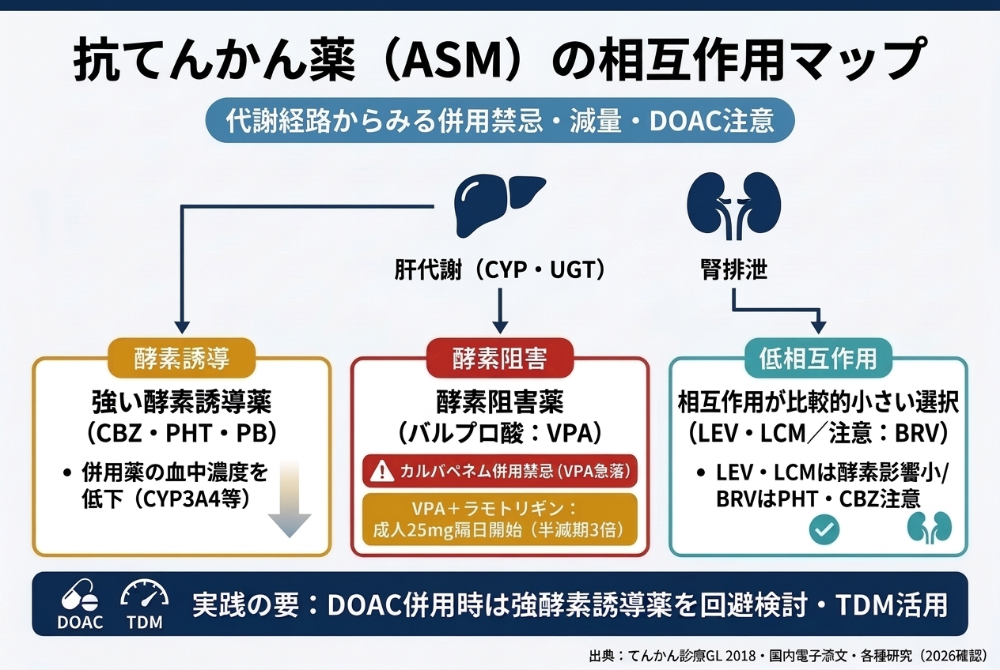

<!doctype html><html lang="ja"><meta charset="utf-8"><meta name="viewport" content="width=device-width,initial-scale=1"><title>抗てんかん薬の相互作用詳解：代謝経路から臨床対策まで：図の拡大</title><style>body{font-family:Meiryo,sans-serif;margin:0;padding:16px;line-height:1.7;color:#17374c}main{max-width:1100px;margin:auto}img{max-width:100%;height:auto}a{color:#195b87}h1{font-size:1.35em}</style><main><h1>抗てんかん薬の相互作用詳解：代謝経路から臨床対策まで</h1><p>画像をクリック／タップすると原寸で開きます。</p><a href="infographic.png" target="_blank" rel="noopener noreferrer" title="画像を原寸で開く"></a><p><a href="https://blog.ichisouzo-lab.com/entry/2025/06/12/082404">記事に戻る</a></p><p>参考資料：<a href="https://www.neurology-jp.org/guidelinem/epilepsy/tenkan_2018.html">てんかんGL 2018</a> ／ <a href="https://pubmed.ncbi.nlm.nih.gov/38976246/">JAMA Neurol 2024</a> ／ <a href="https://pubmed.ncbi.nlm.nih.gov/42606848/">JAMA Neurol 2026</a></p></main></html>